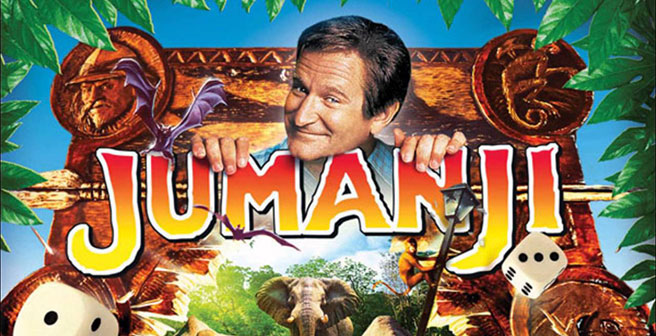
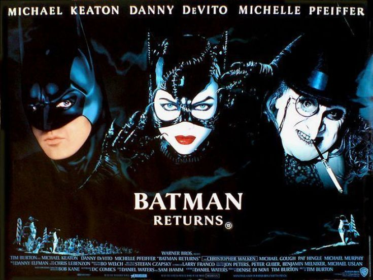
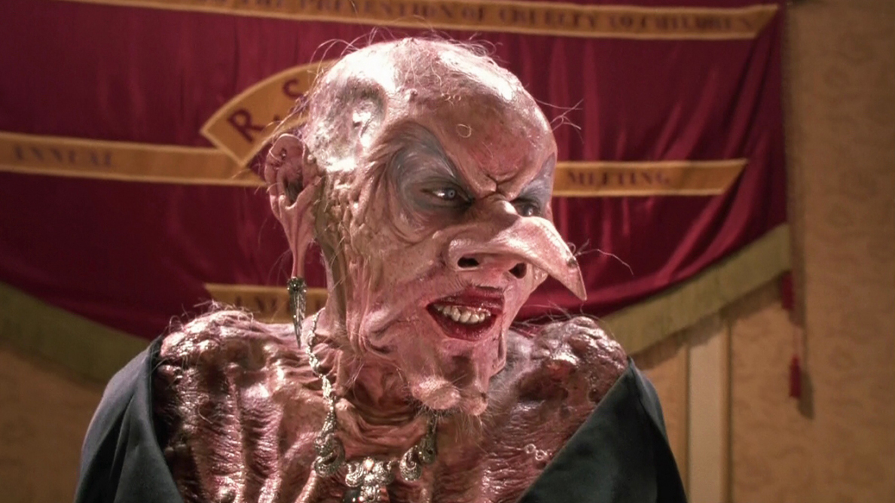
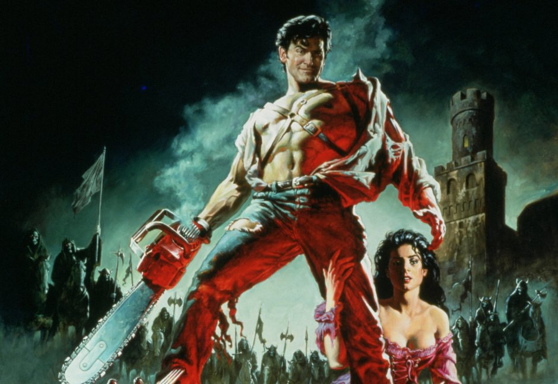
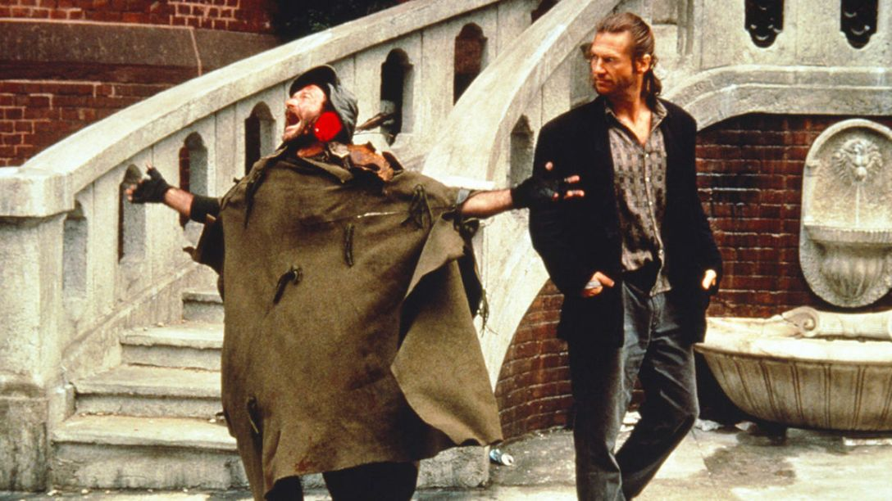
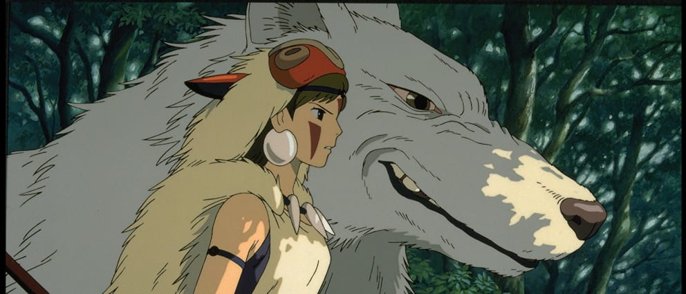
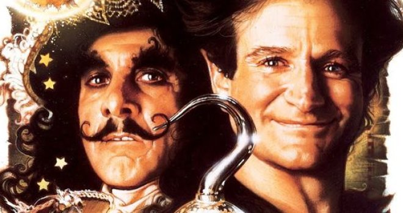
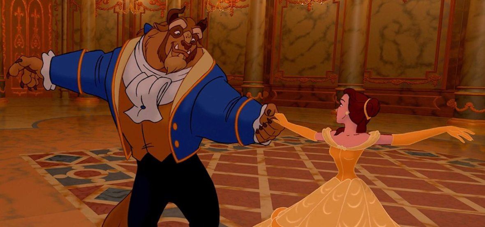
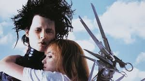

10. JUMANJI
When young Alan Parrish discovers a mysterious board game, he doesn't realize its unimaginable powers, until he is magically transported before the startled eyes of his friend, Sarah, into the untamed jungles of JUMANJI! There he remains for 26 years until he is freed from the game's spell by two unsuspecting children. Now a grown man, Alan reunites with Sarah and together with Judy and Peter tries to outwit the game's powerful forces in this imaginative adventure that combines breathtaking special effects with an enchanting mixture of comedy, magic and thrills.
9. Batman Returns
In the sewers of gotham city to the rooftops of the gotham city the penguin wants to know where he came from well in his villain ways catwoman plans to kill rich man of gotham max shreak but as he battles with millionaire Bruce Wayne both ladies men have their own secrets Bruce Wayne is back as Bat man trying to stop the penguin Max is helping penguin steal gotham city while selina Kyle/catwoman tries to help penguin not knowing her man murder target also her murder is helping him but all four men have their goals taking gotham from crime winning gotham city assassination for two men and more money to be gotham citys number one rich man.
8. The Witches
Based off a story from fantasy author Roald Dahl, the Witches is a flick which scarred the minds of children who watched this strange fun movie. A young boy and his grandmother end up in a hotel during the midst of a witch convention, led by Anjelica Huston’s Grand High Witch. The witches turn the boy and his friend into mice as part of their evil plan. Not only is this movie highly entertaining, but it features brilliant practical fx which one expects from a Jim Henson production.
7. Army of Darkness
When Sam Raimi began his journey with the reluctant hero Ash in the Evil Dead Trilogy, he began with a gritty low budget horror movie. He followed that up with a more comedic horror movie. And finally, he finished the saga off by sending Ash and his magnificent chin to a fantastical realm to have a final showdown with the evil which has been plaguing him. As many of you know, Army of Darkness features Bruce Campbell at his charming best as he accidentally summons an army of Deadites hellbent on attacking a village. Raimi finds a way to bring together; fantasy, horror, and screwball comedy into a single cult classic which is a huge favorite among movie fans.
6. The Fisher King
For years this was a sadly overlooked addition to the filmography of the imaginative Terry Gilliam. But after the tragic passing of its star Robin Williams, this is a movie that has been rediscovered by critics and fans alike. Jeff Bridges is a disgraced shock jock working in a video store with his girlfriend dealing with a deep depression. One night he is rescued from certain death by Robin Williams’ character Parry who is a troubled man haunted by a spectral red knight and searching for the Holy Grail. The former DJ feels responsible for Parry and agrees to help him, with his real quest to help restore the man’s mind. The Fisher King is a highly emotional movie told in the whimsical style that Terry Gilliam has proven the master of.
5. Princess Mononoke
Of course one of the masterpiece films from Studio Ghibli would show up on this list. Written and directed by filmmaking legend Hayao Miyazaki delves into many elements of Japanese legend and fantasy as it tells the story of Ashitaka, a prince seeking to free himself from a demon’s curse. While trying to save himself, the prince becomes embroiled in a war to save the forest and the mythical creatures who live within it. Along with a wolf god and human companion Princess Mononoke, Ashitaka tries to find a way to bring peace. Of all of Miyazaki’s films this is probably the most action packed, but the animation legend, never loses focus of the deep and awe-inspiring story.
4. The Crow

Based on the indie comic by James O’Barr, the Crow has become a cult classic that is still loved by filmgoers. The powerful themes of love and revenge mixed with stunning visuals and action still has the ability to hook audiences. On the night before his wedding, musician Eric Draven is murdered along with his fiancée by a local gang. His soul is unable to rest in peace, so one year after his death the crow who took his soul to the underworld returned Draven to life with a host of supernatural abilities. His purpose is now to stalk the rainy urban wasteland of the city to have his revenge on those wronged him. The Crow will forever be remembered for the tragic death of Brandon Lee due to an accident on the set. Having spent much of his career typecast as an action star, this was expected to be his breakout role where Lee would prove just how talented he was.
3. Hook
Who among us who grew up in the 90’s was not impacted by this flick? If you claim you have never once yelled “Rufio!!” I will call you the damn liar that you are. Like all of us, even the youthful dashing Peter Pan must grow up. One night however, his fantastical past intrudes on his new life. His old enemy Captain Hook has resurfaced and kidnapped his children, forcing a reluctant Pan to return to his old stomping grounds in Neverland. Director Steven Spielberg brings his trademark magic to Hook, as he tells the story of a man trying to reconnect with what really matters in life.
2. Beauty and the Beast
Many have argued that this is the greatest animated film of all time, and it is undoubtedly a cornerstone of the Disney Renaissance. The studio Walt Disney built found tremendous critical and commercial success with their take on this classic French fairy tale. The follows a young girl named Belle who rescues her father from a Beast who lives in an old crumbling castle in the middle of a dark forest. Over the course of the two fall in love as the Beast makes steps to regain his humanity. The combination of heart, gorgeous animation, and catchy songs have ensured that Beauty and the Beast is a timeless classic. It still holds a place in history as the first (and for several years only) animated film to be nominated for Best Picture at the Oscars.
1. Edward Scissorhands
This film more than any others in his filmography epitomizes Tim Burton as a director. An isolated inventor creates for himself a son, but he tragically dies before giving his creation hands, dooming Edward to a life of having blades for hands. Edward goes about his life in a perfectly Burton-esque wonderland until a family brings him into suburbia and tries to integrate him into regular society. Inevitably a deep relationship is forged with the family’s daughter which only leads to heartbreak as it becomes increasingly clear that there is no place for an unique and artistic creature like Edward in a cookie-cutter society. Edward Scissorhands is the perfect showcase Tim Burton’s sensibilities as a filmmaker, and his story perfectly presented with heartfelt performances from Johnny Depp and Wynona Ryder. This fantasy classic also features the final screen appearance from film icon, Vincent Price.